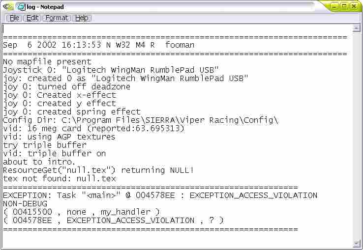
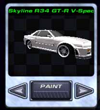
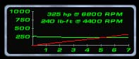

Step 10: Driving the Car for the First Time
This is the make it or break it time. This will tell whether the car was prepared right or not. This will tell when the car's got too many vertices. This will tell the fate of mankind...
well... maybe not the fate of mankind...
but here is the scenario. You have packed the car, you open Viper Racing, you select it in the Hacks menu, you go to Quick Race... and...
OOOOOOOH NOOOOOOOOO! An error! (skip this part if you did not get an error)

EXCEPTION_ACCESS_VIOLATION! This means the car has too many vertices!
You will have to go back into ZModeler, and start deleting tri's and if needed, welding vertices. You should have no more than 5000 vertices for Viper Racing Version 1.23.
This means I won't be able to have see-thru windows in the Vanquish!
Or... I will have to lose the exhaust pipes and fuel cap...
I opted to lose the fuel cap and exhaust pipes so I can still have see-thru windows.
I re-exported and packed the car... but... again, I get the same message.
The car still has too many vertices!
I will have to make do without see-thru windows, until the next patch comes out with a higher vertices limit!
I got the same error again, now with the model stripped to the bare bones! It looks like I will have to try another car!
If this happens to you, say *sigh* and try again with a different vehicle.
... so you now have picked up a new vehicle, and are up to this point.
You go to Quick Race, and...

Your car shows up! On this car, the car mesh is bigger than the wheelbase, so you will have to scale down the car's 3-D Mesh AND the dashboard, and check your wheelbase and front/rear track!
I also have to fix the tint on the headlight covers!
Next, go to the Garage, and Drivetrain. Take a good look at the horsepower and torque graph.

The torque curve is not supposed to curve DOWN! To fix this, raise your peak torque or lower your engine's Horsepower peak RPM.
Set up your car and go test it.
Make note of the car's sounds and driving likeness.
On the Skyline here, the sounds are real weird. After exiting, I found I accidentally left them on Stereo!
Once you are done playing around, you can move ONWARD.